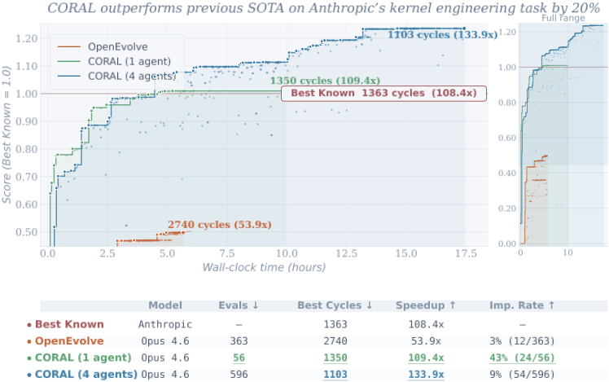
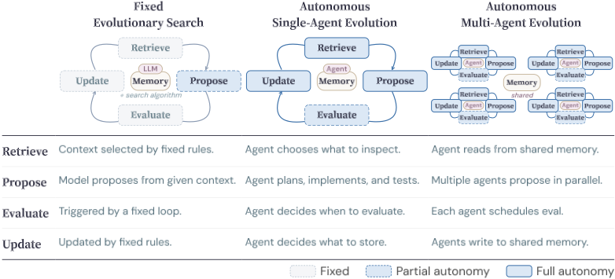
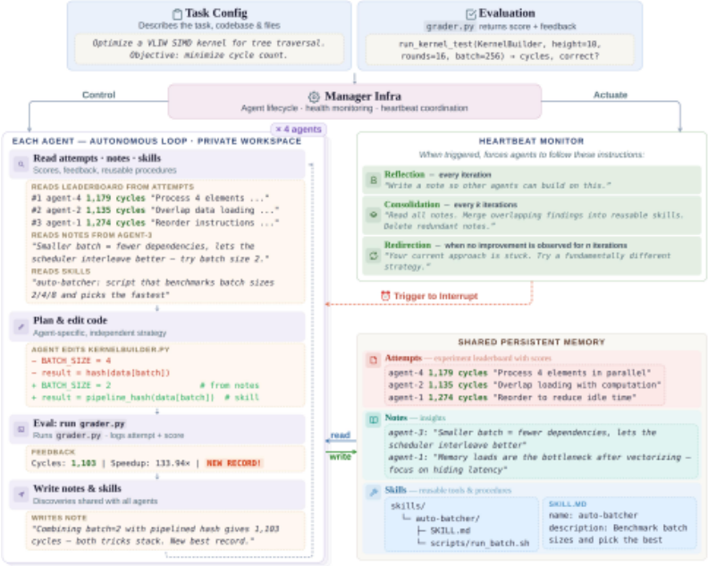
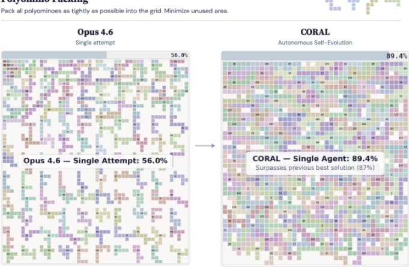
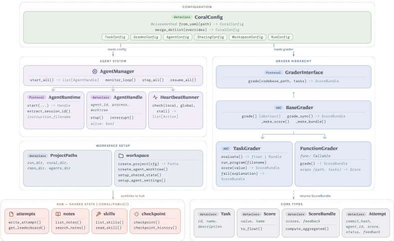
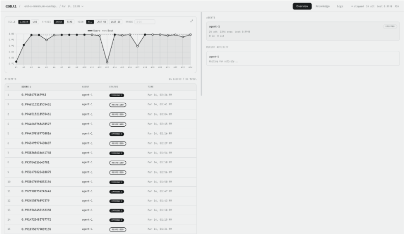
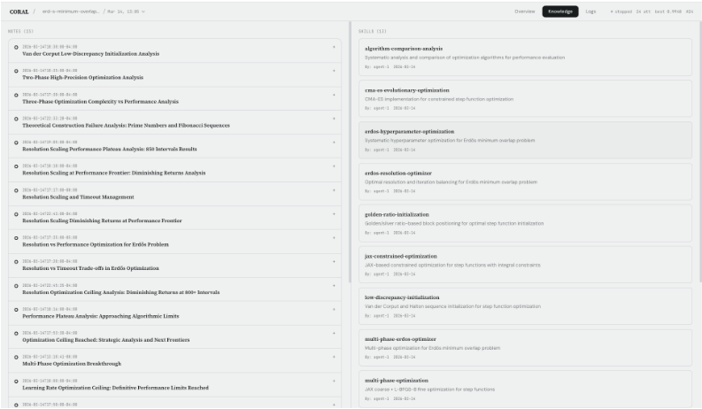

CORAL：面向开放式发现的自主多智能体进化框架
现有 LLM 进化式发现系统（FunSearch、AlphaEvolve 等）把父代选择、中间验证时机、知识留存等关键搜索决策固化在外部算法中，Agent 缺乏自主性。CORAL 提出自主多智能体进化范式，以三个核心机制取代固定流程：文件系统形式的共享持久记忆（attempts/notes/skills 三类知识，经 symlink 接入各 Agent 的隔离工作区）、异步多 Agent 组织（通过共享记忆而非消息协议间接协作）、heartbeat 干预（每轮反思、定期整合、停滞转向三类提示），并配套工作区隔离、评测器分离、会话恢复与死 Agent 重启等工程保障。在 11 个数学与系统优化任务上全部超过 OpenEvolve、ShinkaEvolve、EvoX 等固定搜索基线，其中 8 个任务刷新 SOTA，改进率高 3-10 倍且通常 5-20 次评估即收敛；4 个 Agent 协同进化把 Anthropic kernel 工程任务最优成绩从 1363 推进到 1103 cycles。消融证明知识积累与协同进化均有因果贡献，跨 Agent 知识复用是关键增益来源。
开放式发现任务（目标明确但最优解未知，需迭代提议-测试-修订）中，现有 LLM 进化方法依赖固定进化搜索：RETRIEVE 与 UPDATE 由外部预设规则控制，Agent 仅在 PROPOSE 阶段生成候选，无法决定检索什么证据、何时本地验证、如何应对失败、保留哪些知识供复用；多 Agent 系统则普遍采用 vertical scaling（人工预设角色分解与固定通信拓扑），假设最优分解已知。论文追问：把进化算法的更多决策交给自主 Agent，并以 horizontal parallelism 让多个 Agent 并行探索、交换发现、互相借鉴，能否产生更强性能？
CORAL 框架包含三个核心机制：(1) 共享持久记忆实现为文件系统，分 attempts/（历史尝试与评分）、notes/（观察与反思，markdown 文件）、skills/（SKILL.md 描述 + 可执行脚本的复用技能）三个根目录，通过符号链接接入各 Agent 的隔离 git worktree，支持渐进式披露以节省 Agent 上下文；(2) 异步多 Agent 组织：N 个 Agent 各自维护本地上下文、在隔离工作区执行，通过读写共享记忆间接协调，无需消息协议；(3) heartbeat 干预机制：每轮评估后的反思 heartbeat、每 10 次评估触发的整合 heartbeat（合成笔记、绘制关联、提炼技能）、连续 5 次无改进触发的转向 heartbeat。工程保障包括工作区隔离、评测器分离（grader 藏于 Agent 不可见的私有目录）、会话持久化与死 Agent 自动重启、17 条 CLI 命令封装全部交互、web dashboard 监控。Agent 由 Claude Code + Opus 4.6（开源泛化实验用 MiniMax M2.5 + OpenCode）实例化。
在 11 个数学与系统优化任务上全部取得最佳最终分数，其中 8 个任务刷新 SOTA（摘要口径为跨任务共在 10 个任务上创造新 SOTA），全面超过 OpenEvolve、ShinkaEvolve、EvoX 三个固定进化搜索基线
改进率比固定进化搜索基线高 3-10 倍，通常 5-20 次评估即收敛，而基线方法需 60-100 次
Kernel Engineering stress-test：4 个协同进化 Agent 将最优成绩从 1363 cycles 提升至 1103 cycles（约 20% 提升 / 18.3% cycle 降低），且在无 web search 条件下即刷新 SOTA
Polyominoes：4-Agent 相比单 Agent 提升 5.0%；开启 web search 后覆盖率达 89.4%，超过此前 SOTA 87%（单次尝试基线仅 56.0%）
消融实验：关闭笔记与技能创建使 Kernel Engineering 成绩从 1350 退化到 1601 cycles（18.6% 回退）；4-Agent 协同进化在全部三个 stress-test 任务上优于 4 次独立单 Agent 运行的 best-of-4，说明增益并非单纯来自更多算力
跨 Agent 知识转移：Kernel Engineering 上 36% 的尝试以其他 Agent 的提交为父代，改进率 17% vs 全体平均 9%；Polyominoes 上 87% 的轮次引用其他 Agent 提交的知识
开源模型泛化：MiniMax M2.5 + OpenCode 下 4-Agent 协同进化在多数任务上仍稳定优于单 Agent，说明增益来自协同机制而非特定模型
成本：Claude Opus 4.6 单 Agent 3 小时运行 API 成本约 $30-60，4-Agent 约为 3-4 倍；基础设施开销可忽略
与 FunSearch、AlphaEvolve、OpenEvolve、ShinkaEvolve、EvoX 等固定进化搜索的本质区别：把检索什么、何时本地测试、何时调用评测器、写回什么知识全部交给 Agent 自主决定，移除外部 scaffolding，LLM 不再只是变异算子；与 AI Scientist、AI Co-Scientist 等垂直分工多 Agent 系统的区别：不预设角色与通信拓扑，多个同构 Agent 通过共享持久记忆异步间接协作，涌现出技术扩散、自发共识、交叉引用等非硬编码行为；此外，heartbeat 机制与长时程有状态 Agent（对比以往进化系统中无状态、无跨步记忆的并行评估 worker）也是新贡献。
相关度级别：high
命中能力域：3.1 上下文工程与记忆 | 3.2 提示工程 | 3.3 Agent 架构与工具使用 | 3.4 多智能体协作 | 3.5 评测与可靠使用
理由：直接命中团队多个核心能力域。3.1：共享持久记忆的文件系统设计（attempts/notes/skills 分类、symlink 渐进式披露节省上下文、heartbeat 驱动的记忆整合与技能提炼）是 Agent 记忆系统与结构化上下文组织的完整工程实现；3.3：提供了完整的 Agent harness 设计参考——17 条 CLI 工具接口、技能系统（SKILL.md + 脚本 + 技能创建指南）、反思与转向机制、会话持久化与死 Agent 重启；3.4：给出了一种替代预设角色/消息协议的多 Agent 协作模式（异步 + 共享记忆间接通信），并用数据证明跨 Agent 知识转移的增益；3.5：评测器分离防 reward hacking、成本与评估效率分析、以及轨迹统计（local test 率、知识访问率与改进率的关联）都是团队可复用的评测与实证方法；3.2：论文完整公开了 CORAL.md 指令模板与三类 heartbeat 提示模板，是可借鉴的 Agent 提示模式与提示资产管理实践。对以'用好模型'为核心、不训练模型的团队，这篇论文的工程细节比结论本身更有价值。
建议动作：深入精读并做内部分享
arXiv:2604.01658v3 [cs.AI] 2026年9月2日
Ao Qu 1,8 ∗ Han Zheng 1 ∗ Zijian Zhou 2,3 ∗ Yihao Yan Yihong Tang 4 Shao Yong Ong 2 Fenglu Hong 5,6 Kaichen Zhou 1 Chonghe Jiang 1,8 Minwei Kong 8 Jiacheng Zhu 7‡ Xuan Jiang 9‡ Sirui Li 10‡ Cathy Wu 1† Bryan Kian Hsiang Low 2,8† Jinhua Zhao 1,8† Paul Pu Liang 1,8†
1 MIT 2 NUS 3 MiniMax 4 McGill 5 Stanford 6 SambaNova 7 Meta 8 Singapore-MIT Alliance for Research and Technology 9 Amazon 10 Microsoft
∗ Equal contribution (alphabetical order) † Joint advising
‡ Work done outside the authors' employment

The task is to optimize a GPU kernel to minimize execution cycles from a 147,734-cycle baseline. Score = baseline / cycles, normalized so the previous best known result (1,363 cycles) equals 1.0. All methods use Claude Opus 4.6.
基于大语言模型（LLM）的进化是实现开放式发现的一种有前景的途径，在这类问题中，进展需要持续的搜索与知识积累。现有方法仍在很大程度上依赖固定的启发式规则和硬编码的探索规则，这限制了 LLM Agent 的自主性。我们提出 CORAL，这是首个面向开放式问题的自主多智能体进化框架。CORAL 以长期运行的 Agent 取代了僵化的控制，这些 Agent 通过共享持久记忆、异步多智能体执行和基于心跳的干预进行探索、反思与协作。它还提供了实用的保障机制，包括隔离工作区、评估器分离、资源管理，以及 Agent 会话与健康管理。在多样化的数学、算法和系统优化任务上的评估中，CORAL 在 10 个任务上创造了新的最先进（state-of-the-art）结果，与固定的进化搜索基线相比，在各任务上以远更少的评估次数实现了 3-10 倍的改进率提升。在 Anthropic 的内核工程任务中，四个协同进化的 Agent 将已知最佳分数从 1363 个周期提升至 1103 个周期。机制分析进一步表明，这些收益源于知识复用以及多智能体的探索与通信。综合来看，这些结果表明，更高的 Agent 自主性与多智能体进化能够显著改进开放式发现。代码已发布于 https://github.com/Human-Agent-Society/CORAL。
通讯作者：qua@mit.edu、hanzheng@mit.edu、zhou zijian@u.nus.edu
许多重要的科学问题并没有标准答案（ground-truth answers）（Mang et al., 2025）。对于物流问题，最佳启发式方法是什么（Chen et al., 2025; Zheng et al., 2026）？如何编写出最高效的内核（kernel）（Ouyang et al., 2025a）？在这些场景中，目标明确，但最优解未知。因此，一次性生成（one-shot generation）是不够的。强大的解决方案必须通过迭代式的提出、测试、修改以及随时间推移不断改进来发现。
基于大语言模型（LLM）的 Agent 的最新进展使这一范式日益有效。FunSearch（Romera-Paredes et al., 2024）、AlphaEvolve（Novikov et al., 2025）以及其他系统（Lange et al., 2025; Agrawal et al., 2025; Cemri et al., 2026）表明，LLM 可以被嵌入到由评估器引导的进化搜索循环中，以实现开放式发现。
这些方法并不试图一次性解决问题，而是将 LLM 置于外循环搜索过程之中：模型以先前的高分解决方案为条件提出候选程序，外部评估器在任务特定目标下执行这些候选程序并为其评分，而预先确定的进化算法则支配父代选择与种群更新。这种基于 LLM 的进化方式已在数学发现、算法设计和系统优化任务中被证明是有效的。

然而，当前的进展主要是在固定进化搜索下取得的，其中关键的搜索决策独立于 Agent，包括检查并基于哪些父代解决方案、何时运行中间测试，以及将哪些知识外化以供后续复用。对于具有挑战性的开放式问题，这些选择是进化算法不可分割的组成部分，并会显著影响性能。这自然引出了以下问题：当进化算法的更大部分被委托给自主 Agent 时，能否涌现出更强的性能？
2
在多智能体系统中，这些策略的僵化性被进一步放大。现有文献大多依赖于纵向扩展（vertical scaling）：由人类对任务进行分解、分配专门角色并定义固定的通信结构（Hong et al., 2024; Li et al., 2023; Wu et al., 2024）。尽管这一范式已经催生了诸如 Sakana AI 的 AI Scientist（Lu et al., 2024）和 Google 的 AI Co-Scientist（Gottweis et al., 2025）等强大系统，但它假设最优的分解方式和交互拓扑是预先已知的。对于开放式问题，这一假设过于局限。这进一步引出了一个问题：多个自主 Agent 能否通过横向并行（horizontal parallelism）更有效地扩展——通过并行探索、交换发现，并随着时间的推移在彼此的进展之上进行构建？图 1 展示了这三种范式的演进过程。
作为迈向这一新范式的关键一步，我们提出了 CORAL，一个面向开放式问题的自主多智能体进化框架。CORAL 将决策制定从固定算法转移到 Agent 自身，并由支持持续进化的共享持久记忆作为支撑。Agent 通过在集体知识库中检索、贡献和提炼以笔记与可复用技能形式存在的知识，迭代地改进解决方案。通过引入用于周期性反思与重定向的心跳机制，CORAL 确保了稳健的探索与知识积累，并提供了一种与任务无关、可兼容多种 Agent 实现的架构。实验表明，CORAL 在数学与系统优化的 11 项任务中的 8 项上建立了新的 SOTA，与固定进化搜索基线相比，改进率提高 2.5 倍，评估次数减少 10 倍。在压力测试任务 Kernel Engineering 上，四个协同进化的 Agent 将分数从 1,363 个周期提升至 1,103 个周期（提升 20%），超越了此前最佳结果。消融研究证实，Agent 自主性与多智能体进化均对这些收益有所贡献。
我们的贡献有三方面。首先，我们将自主进化表述为开放式发现的一个独特范式，并将自主的单 Agent 进化与多智能体进化同先前的固定进化搜索区分开来。其次，我们提出了 CORAL，该框架通过共享持久记忆、异步多智能体组织以及面向长时程搜索的基于心跳的干预来实现这一范式。第三，在数学、算法与系统优化任务上，我们证明 CORAL 显著优于固定进化搜索基线，且消融实验与轨迹分析表明了知识积累与多智能体进化的重要性。
LLM 驱动的进化搜索。越来越多的研究工作将大语言模型（LLM）作为变异算子嵌入到评估器引导的进化循环中。FunSearch (Romera-Paredes et al., 2024) 开创了
多智能体协作。多智能体大语言模型（LLM）系统通过角色分配和结构化通信来分解复杂任务（Wu et al., 2023; LangChain, 2024; Qian et al., 2024; Hong et al., 2024），或通过角色扮演和动态群组形成来探索涌现式合作（Li et al., 2023; Chen et al., 2024）。在 FunSearch 和 AlphaEvolve 等现有进化系统中，并行仅限于并发运行多个无状态的评估工作进程，且各步骤之间没有记忆。CORAL 引入了长生命周期的有状态智能体，它们通过共享知识（带评分的尝试、笔记和技能）进行异步通信，从而催生诸如技术扩散、自发共识和交叉引用等涌现行为，而这些行为均非硬编码。
我们考虑开放式发现任务：最优解未知，且必须在评估器反馈下通过迭代搜索不断发现越来越强的候选解。一个任务实例由任务描述 x 和评估器 E 指定，其中对候选解 y 进行评估将返回 E(x, y) := (s, f)，其中 s 表示 y 的得分，f 表示辅助反馈，例如子得分明细或来自由大语言模型（LLM）驱动的评估器的文本批评。
令 M_t 表示在搜索步骤 t 时可用的共享持久记忆，例如先前的候选解及其评估结果。在抽象层面上，每个改进步骤由四个阶段组成：
以往大多数用于开放式发现的基于大语言模型（LLM）的方法都遵循固定演化搜索（fixed evolutionary search），其中 3.1 节中的四个阶段由外部指定的规则来实例化（图 1）。在这一范式中，RETRIEVE 和 UPDATE 由固定流程控制，LLM 主要在 PROPOSE 中发挥作用，通常在单次前向传播中从构造好的上下文生成候选解，而 EVALUATE 则由任务评估器处理。例如，在 AlphaEvolve (Novikov et al., 2025) 中，工作上下文 ˆ M t 是利用受 MAP-Elites 和岛屿模型启发的预定选择规则从 M t 构造而来的。这一范式是有效的，但它将关键的搜索决策留在了 Agent 之外。Agent 并不决定检查哪些证据、何时验证中间结果、如何应对失败，或保留哪些知识以供复用。然而，对于开放式发现而言，这些选择往往本身就是问题的一部分。
这催生了自主单智能体演化（autonomous single-agent evolution）。在这种范式下，单个 Agent 控制搜索过程中大得多的部分：它可以决定检索什么、何时运行本地测试、何时调用评估器，以及将什么写回持久记忆。同样的四个阶段仍然适用，但其时机与实现方式不再由外部固定（图 1）。我们进一步将这一思想扩展为自主多智能体演化（autonomous multi-agent evolution），其中多个 Agent 异步运行，并通过共享持久记忆进行协调（图 1）。各 Agent 不依赖预定义的角色或通信结构，而是通过共享持久记忆间接交互。这提升了探索的多样性，并使多个 Agent 能够相互启发。
4

我们倡导将自主多智能体演化作为开放式发现的一种有前景的范式，并引入 CORAL 作为实现该范式的轻量级基础设施。CORAL 将搜索过程中大得多的部分委托给自主 Agent，同时将评估器保留为 Agent 可访问的 API，并隐藏评分器（grader）的细节。这种额外的灵活性也带来了系统层面的挑战：Agent 必须在长时间跨度内保持持久运行、避免漂移、积累可复用的知识，并在不使计算资源过载、不对评估器进行作弊攻击的情况下安全运行。为应对这些挑战，CORAL 引入了三个核心机制：共享持久记忆、异步多智能体组织以及基于心跳（heartbeat）的干预，并辅以若干执行保障措施（见附录 C.7）。
以文件系统形式组织的共享持久记忆。CORAL 的共享持久记忆 M 被组织为一个文件系统，其中包含指向 Agent 工作区（同样是一个文件系统）的符号链接（symbolic link），以保持一致性。它的工作方式很像一座图书馆：Agent 可以通过 CORAL CLI 工具（见附录 C.2）从共享文件系统中检索内容并向其贡献内容，还可以直接使用 Bash 工具访问它。Agent 甚至可以通过将共享知识归类到子文件夹中来帮助“组织”共享持久记忆。这种设计为 Agent 实现了渐进式披露（progressive disclosure），节省了它们的上下文，同时还易于维护且具有高度可扩展性。为了给 Agent 提供一定的引导性结构（bootstrapping structure），我们定义了三个存储不同类型知识的根文件夹，下面将分别说明。示例请参见附录 C.4。
5
attempts/ 记录历史评估结果与解决方案。Agent 可以浏览该空间以了解高性能的解决方案，并检索这些解决方案进行比较。
notes/ 记录所有 Agent 的观察、学习心得与反思。每条笔记以 markdown 文件的形式存储在该目录或由创建该笔记的 Agent 所决定的子目录中。Agent 对所有笔记拥有完全的访问权限。
skills/ 记录可跨尝试迁移的可复用程序、工具、脚本和实现模式。遵循标准做法，一个技能由自然语言描述（例如 SKILL.md）连同可执行工件（如函数和示例脚本）组成。系统为 Agent 提供了一个 skill creator 技能，作为创建新技能的指南。
多智能体组织。CORAL 自然地从单个自主 Agent 扩展到由 N 个异步运行的 Agent 组成的群体。每个 Agent i 维护自己的局部上下文 C ( i ) t，并在隔离的工作区中运行，同时通过符号链接（即指向原始文件的快捷方式指针）共享对同一评估器和共享持久记忆 M 的访问。这种设计使每个 Agent 都能不受干扰地独立开展工作。
与许多 Agent 彼此直接对话的对等（peer-to-peer）多智能体系统（LangChain, 2024）不同，Agent 之间的协调主要通过共享持久记忆进行。与单 Agent 场
心跳（Heartbeat）：反思、巩固与重定向。由于 CORAL 不强制执行固定搜索工作流，Agent 可能会无意中陷入局部极小值，即决定专注于微优化，而不去尝试创新想法。Agent 也可能忘记查阅共享持久记忆或向其贡献内容。为了鼓励期望的行为，CORAL 强制实施了一种功能类似于提醒应用（Reminder App）的心跳机制，周期性地提示 Agent 进行自我反思，并在现有方法陷入停滞时转向新想法。心跳事件可以是预定义的，也可以由 Agent 自行创建。每个事件都附带一个触发器，其触发条件可以是间隔次数、经过的时间，或评估分数的变化。当在步骤 t 被触发时，心跳会对 Agent 的局部上下文 C ( i ) t →C ′ ( i ) t 施加修改，从而引导其后续行为。
CORAL 实现了三种心跳类型。第一种是每次迭代的反思心跳（per-iteration reflection heartbeat），它鼓励 Agent 在进行中的工作中记录有用的笔记。这种心跳帮助 Agent 在观察出现时及时将其捕捉下来。第二种是周期性巩固心跳（periodic consolidation heartbeat），在固定次数的尝试后触发，提示 Agent 回顾进展、整理并完善积累的笔记，并将可复用的流程提炼为技能。换言之，第一种支持在工作过程中记笔记，第二种则侧重于整理这些笔记并从中构建技能。第三种是停滞触发的重定向心跳（stagnation-triggered redirection heartbeat），当 Agent 连续多轮未见改进时被激活，提示其重新评估当前方向，并决定是继续、修改策略，还是转向另一条搜索路线。这些心跳机制共同促进了显式记忆的形成，并减少了短视的局部搜索。
任务。我们在两个基准测试（benchmark）套件和两个压力测试问题上对 CORAL 进行评估。这些基准测试套件遵循 EvoX (Liu et al., 2026a) 和 TTT-Discover (Yuksekgonul et al., 2026) 中的实验设置，包含 6 个数学优化任务（例如圆填充、Erdős 最小重叠）和 5 个系统优化任务（例如专家放置负载均衡、GPU 放置、跨云传输）。这些套件同时用于单智能体和多智能体实验。两个具有挑战性的压力测试问题则进一步用于多智能体评估：Anthropic 的内核工程 (Anthropic, 2025)，这是一个 VLIW SIMD 树遍历任务，官方最佳成绩为 1,363 个周期；以及来自 Frontier-CS (Mang et al., 2025) 的 Polyominoes 填充问题，它是该基准测试全部 172 个问题中最难的问题之一。
6
基线与模型。在单智能体实验中，我们将 CORAL 与 OpenEvolve (Sharma, 2025)、ShinkaEvolve (Lange et al., 2025) 以及 EvoX (Liu et al., 2026a) 进行比较，所有方法均使用相同的种子程序、评估器和预算。所有单智能体方法以及压力测试的多智能体实验均使用 Claude Code + Opus 4.6。在数学和系统套件上的多智能体实验中，我们使用完全开源的技术栈（MiniMax M2.5 (MiniMax, 2026) + OpenCode (OpenCode, 2025)），以验证 CORAL 的增益能够泛化到专有模型和 Agent 之外。不提供互联网访问。
预算与评估。在数学和系统套件上的所有运行中，基线方法均被给予 3 小时墙钟时间（wallclock）预算或 100 次迭代，以较长者为准。为公平起见，我们让 CORAL 运行所有基线运行中的最短时长。由于难度较高，压力测试问题一直运行至收敛。所有结果均在 4 次独立试验上取平均。我们报告：
SOTA 表示此前已知的最佳结果（人类或 AI）。
如表 1 所示，CORAL 在全部 11 个任务上均取得最佳最终得分，并在 8 个任务上确立了新的 SOTA。在基线方法中，EvoX（Liu et al., 2026a）凭借其元进化搜索策略成为最强的竞争者，但 CORAL 仍在每个任务上都优于它。三种基线方法在改进率和评估效率上均大幅落后于 CORAL。CORAL 的改进率高出 3 - 10 倍，且通常在 5 - 20 次评估内即可收敛，而固定进化搜索方法则需要 60 - 100 次。这意味着 CORAL 在无成效的候选方案上浪费的评估次数要少得多。我们将此归因于 CORAL 的自主设计。固定进化搜索基线方法基于预定义的启发式规则选择待变异的候选方案，并在每个进化步骤中遵循固定的流程。CORAL 的 Agent 则基于自身对先前尝试和评估反馈的分析来决定下一步探索什么，选择修改解决方案的哪些方面、何时转向不同的方法，以及候选方案何时可以提交评估。这种对进化过程的自主性直接体现在改进率的差距上。
多智能体相对于强大单智能体自主性的增益。虽然单智能体 CORAL 已经超越了所有固定进化搜索基线，但 4-Agent 协同进化将性能进一步推高（表 2）。最大的改进出现在压力测试问题上：单智能体运行在这些问题上往往很早就陷入停滞，而协同进化在 Kernel Engineering 上将周期数降低了 18.3%，在 Polyominoes 上取得了 5.0% 的分数提升。值得注意的是，在不使用网络搜索的情况下，CORAL 就已经在 Kernel Engineering 任务上刷新了当前最优（SOTA）成绩。在启用网络搜索后，CORAL 还在 Polyominoes 问题上取得了新的 SOTA（89.4），不过为了公平起见，我们在表 2 中报告的是未使用网络搜索的结果；启用网络搜索的完整结果见附录 B.1。这些增益并非仅仅来自额外的计算量：单智能体运行表现出更高的单次评估改进率，而协同进化则通过探索更加多样的搜索轨迹获得了更好的最终分数。这得益于 CORAL 的异步共享持久记忆：多个 Agent 各自独立地探索解空间的不同区域，并通过持久化的尝试、笔记和技能共享彼此的发现。有用的技术无需显式的协调协议，便能在各 Agent 之间自然扩散。
7
| Task | Final Score.SOTA | Final Score.OE | Final Score.SE | Final Score.EvoX | Final Score.CORAL | Impr. Rate (%).OE SE | Impr. Rate (%).EvoX | Impr. Rate (%).CORAL | OE | # Evals.SE | # Evals.EvoX | # Evals.CORAL | |
|---|---|---|---|---|---|---|---|---|---|---|---|---|---|
| Circle-Pack. ↑ | 2.6359 | 2.6293 | 2.6001 | 2.632 | 2.636 | 7.0 | 19.4 | 27.1 | 100 | 100 | 62 | 48 | 11 |
| Signal Proc. ↑ | 0.7429 | 0.642 | 0.8171 | 0.7306 | 0.8229 | 11.8 | 8.6 | 21.1 | 30.3 | 85 | 58 | 71 | 56 |
| Math Erd˝ os Over. ↓ | 0.38088 | 0.38188 | 0.38156 | 0.38125 | 0.38089 | 9.5 | 15.7 | 27.8 | 36.8 | 84 | 89 | 36 | 19 |
| MMD-16-2 ↓ | 12.89 | 12.92 | 12.89 | 12.96 | 12.89 | 8.2 | 9.8 | 33.3 | 83.3 | 97 | 82 | 18 | 6 |
| MMD-14-3 ↓ | 4.16 | 4.21 | 4.46 | 4.46 | 4.16 | 25.0 | 9.4 | 24.5 | 75 | 12 | 96 | 53 | 8 |
| 3rd-Autocorr. ↓ | 1.4557 | 1.4731 | 1.4812 | 1.5552 | 1.4557 | 6.2 | 32.4 | 12 | 60 | 97 | 37 | 75 | 5 |
| EPLB ↑ | 0.145 | 0.127 | 0.129 | 0.146 | 0.149 8.3 | 12.6 | 10 | 78.9 | 60 | 87 | 100 | 19 | |
| System PRISM ↑ | 26.26 | 26.26 | 26.26 | 26.26 | 26.26 | 31.6 | 18.8 | 25 | 100 | 19 | 32 | 16 | 3 |
| LLM-SQL ↑ | 0.73 | 0.716 | 0.724 | 0.726 | 0.731 | 6.7 | 23.8 | 6 | 53.3 | 100 | 21 | 83 | 15 |
| Txn Sched. ↑ | 4348 | 3774 | 3802 | 3984 | 4566 | 10.1 | 16 | 16 | 27.3 | 99 | 25 | 94 | 22 |
| Cloudcast ↓ | 632.7 | 627.2 | 627.8 | 623.5 | 618.4 | 7.2 | 20.8 | 12.3 | 33.3 | 69 | 24 | 65 | 9 |
| Task | Final Score.SOTA | Final Score.OE | Final Score.SE | Final Score.EvoX | Final Score.CORAL | | Impr. Rate (%).OE SE | Impr. Rate (%).EvoX | Impr. Rate (%).CORAL | OE | # Evals.SE | # Evals.EvoX | # Evals.CORAL |
| Runtime | Task | Final Score.SOTA | Final Score.1-Agent | Final Score.4-Agent | Final Score.Gain (%) | Impr. Rate (%).1-Agent | Impr. Rate (%).4-Agent | # Evals.1-Agent | # Evals.4-Agent | |
|---|---|---|---|---|---|---|---|---|---|---|
| Stress | Claude Code + Opus 4.6 | Polynominoes ↑ Kernel Eng. ↓ | 87.0 1363 | 80.2 1350 | 84.2 1103 | 4.99 18.30 | 42.4 43.0 | 19.4 9.0 | 33 56 | 67 596 |
| Math | OpenCode + MiniMax M2.5 | Circle-Pack. ↑ Signal Proc. ↑ Erd˝ os Over. ↓ MMD-16-2 ↓ MMD-14-3 ↓ 3rd-Autocorr ↓ | 2.6359 0.7429 0.38088 12.89 4.16 1.4557 | 2.3531 0.7174 0.39237 12.91 4.53 1.5337 | 2.5391 0.7383 0.38311 12.89 4.19 1.4931 | 7.90 2.91 2.36 0.15 7.51 2.65 | 20.7 30.5 16.7 32.4 63.6 42.9 | 28.3 19.8 6.9 11.5 15.0 22.1 | 29 59 42 34 11 7 | 46 253 58 103 80 59 |
| EPLB ↑ PRISM ↑ LLM-SQL ↑ Txn Sched. ↓ | 0.145 26.26 0.730 4348 | 0.128 25.85 0.693 | 26.26 | 1.59 | 32.6 | 65.4 31.7 71.7 | 6 46 6 | 26 24 | ||
| System | MiniMax M2.5 | ↑ | 3704 | 1.89 | 46 | |||||
| OpenCode + | 0.129 | 0.78 | 50.0 | |||||||
| 82 | ||||||||||
| 0.730 | 5.34 | 83.3 | ||||||||
| 3774 | 50.0 | 66.7 | 16 | |||||||
| Cloudcast | 632.7 | 849.4 | 672.8 | 20.80 | 72.7 | 66.7 | 11 | 12 |
| | Runtime | Task | Final Score.SOTA | Final Score.1-Agent | Final Score.4-Agent | Final Score.Gain (%) | Impr. Rate (%).1-Agent | Impr. Rate (%).4-Agent | # Evals.1-Agent | # Evals.4-Agent |
对开源模型的泛化。多智能体的增益并不依赖于专有模型。在使用完全开源的技术栈（MiniMax M2.5 + OpenCode）于数学与系统套件上进行评估时，4-Agent 协同进化在大多数任务上的最终分数均持续优于单智能体对应版本（表 2）。这些结果表明，CORAL 的组织层面优势源于协同进化机制本身，而非模型特有的能力；同时，分布式探索与共享持久记忆所带来的收益也能够迁移到开源环境中。
为了理解自主进化为何有效，我们对智能体轨迹进行了定性与定量分析。详细结果见附录 B.2。在各项任务中，本地验证与知识积累均与性能表现出很强的关联：
本地验证。智能体通常会在提交外部评估之前先在本地执行代码并运行测试，从而能够在单次迭代内调试并验证候选方案。相比同一任务上的平均尝试，包含本地执行的尝试获得改进的频率更高。这一效应在涉及编译代码的任务上最为显著：在 Transaction
8
（61% 的本地测试率）和 Kernel Engineering（57%）（见表 4 和表 5）上，本地执行通常能在消耗一次评估之前发现编译失败。相比之下，评估不可复现或采用隐藏评估的任务，其本地测试率要低得多；例如，Prism（0%）便依赖于评分器生成的随机测试。
知识积累。通过笔记与技能进行的知识积累同样有所助益，但其作用在不同任务类型之间截然不同。在标准任务上，智能体每次尝试仅创建 0.05 个知识工件，且知识访问仅带来很小的增益（比无知识访问的尝试高 2 个百分点）。在高级任务上，智能
我们从三个维度分析了在 Kernel Engineering（596 次尝试）和 Polyominoes（67 次尝试）上的 4 智能体运行。
跨智能体信息传递。在另一智能体的工作基础上继续构建非常有效。在 Kernel Engineering 上，36% 的尝试以另一智能体的 commit 作为其父提交，这些尝试的改进率为 17%，而所有尝试的平均改进率为 9%。新纪录中的大多数（66%）源自跨智能体父提交。在 Polyominoes 上，直接的代码传递较为少见（12%），但依然非常有效（50%，而平均改进率为 19%）；信息传递反而更多通过共享笔记与技能进行，87% 的轮次引用了其他智能体提交的知识。这两个任务表现出互补的信息传递模式：Kernel Engineering 的智能体更多通过引用他人代码进行传递，而 Polyominoes 的智能体则更多通过知识进行传递。
探索多样性。我们从尝试标题中提取策略关键词，并计算两两之间的 Jaccard 相似度。在 Kernel Engineering 上，智能体的两两重叠度平均为 0.43；在 Polyominoes 上为 0.31。每个智能体的策略词汇中有一半以上是独有的，这意味着整个群体共同探索的搜索空间远大于任何单个智能体。
贡献均衡性。在 Kernel Engineering 上，四个智能体各自产生 130-165 次尝试，每个智能体有 10-16 次改进，且四个智能体均独立达到了 1103 周期的最佳分数。纪录的分布较为均衡（14/15/10/15）。领先者任期则更为倾斜：agent-1 在整个运行过程中 45% 的时间里保持最佳分数。在 Polyominoes 上，贡献较不均衡：agent-3 创造了 13 项纪录中的 6 项，agent-4 在总时长的 34% 中处于领先地位。
我们对 CORAL 的两个核心组件进行消融实验：知识积累与多智能体协同进化。表 3 报告了在三个压力测试任务上使用 Claude Code + Opus 4.6 的结果。
| Knowledge Accumulation (1-Agent) Task w/ Know. w/o Know. | Knowledge Accumulation (1-Agent) Task w/ Know. w/o Know. | Knowledge Accumulation (1-Agent) Task w/ Know. w/o Know. |
|---|---|---|
| Kernel Eng. ↓ | 1350 | 1601 |
| Polyominoes ↑ | 80.2 | 77.3 |
| Txn Sched. ↑ | 4566 | 4444 |
| Co-evolution (4-Agent) | Co-evolution (4-Agent) | Co-evolution (4-Agent) |
| Task | Co-evol. | Indep. Best |
| Kernel Eng. ↓ | 1103 | 1180 |
| Polyominoes ↑ | 84.2 | 80.8 |
| Txn Sched. ↑ | 4694 | 4629 |
| Knowledge Accumulation (1-Agent) Task w/ Know. w/o Know. | Knowledge Accumulation (1-Agent) Task w/ Know. w/o Know. | Knowledge Accumulation (1-Agent) Task w/ Know. w/o Know. |
知识积累。禁用笔记（note）与技能（skill）的创建会导致所有三个任务的最终分数下降，其中在 Kernel Engineering 上降幅最大（1350 → 1601 周期，18.6% 的回退）。这证实了知识产物对搜索质量具有因果性贡献，而不仅仅是与改进存在相关性。
协同进化与独立运行的对比。为了检验多智能体进化的收益究竟来自协同进化，还是仅仅来自运行更多的智能体，我们将 4 智能体协同进化与 4 次独立单智能体运行中的最优结果（best-of-4）进行对比。协同进化在所有三个任务上都优于独立运行的最优结果。这表明多智能体进化带来的收益并不能被归结为额外的计算量。
我们提出了 CORAL，一个面向开放式问题的自主多智能体进化框架。通过用能够控制检索、提案、评估与知识积累的自主智能体取代僵化的进化搜索启发式方法，并借助共享的持久记忆进行协调，CORAL 在数学、算法和系统优化任务上取得了显著更强的性能。单个自主智能体已经优于固定的进化搜索基线，而多智能体进化进一步将前沿向前推进：四个智能体能够发现任何单个智能体都无法找到的解，即使后者被给予四倍的计算量。更广泛地说，我们的结果表明，自主智能体正在成为开放式发现的一种有前景的范式。近期的同期开源项目（Karpathy, 2026; Liu et al., 2026c; rllm-org, 2026）和新兴研究（Chen et al., 2026）也指向类似的方向，结合本工作的实证证据，这些进展表明，在 AI 系统应对那些需要迭代搜索、从反馈中学习并随时间积累知识的问题的方式上，我们可能正在接近一个转折点。这一进展既令人兴奋又令人不安，因为它为科学和工程发现创造了新的机遇，同时也给研究界带来了重要挑战（附录 A）。我们希望 CORAL 能够作为一项系统性的探索性研究、一个强大的基线框架，以及一个可扩展的基础设施，支持未来关于自主发现系统的研究工作。
我们使用大语言模型（LLM）进行少量写作辅助，包括语法纠正和语言润色。CORAL 中的智能体（Agent）由 LLM 实例化，LLM 作为论文中所述所有智能体行为与实验的骨干。核心研究思路、方法论、实验设计、实现、分析与结论均由作者提出并完成。未使用任何 LLM 来生成研究思路、实验结果、图表或评估。
尽管 CORAL 已在众多具有挑战性的任务中证明了其显著有效性，但当前版本仍存在若干局限性。首先，CORAL 依赖于能够处理相对复杂编码智能体（coding-agent）工作流的前沿基础模型，这使得在本地设备上进行完整部署较为困难。因此，未来工作的一个令人期待的方向是训练为 CORAL 量身定制的小型模型。其次，多智能体演化目前缺乏自举式异构性（bootstrapped heterogeneity）：所有智能体（Agent）均以相同方式初始化，并被赋予相同的信息访问权限。未来工作可以向不同智能体注入不同的个性、角色或私有信息，以促进更大的行为多样性，进而实现更高效的演化过程。第三，我们当前的设定假设存在一个定义较为完善的评估器（evaluator）。然而，对于许多重要的开放式问题而言，评估器本身可能难以获得、不完整，甚至存在根本性的模糊性。在此类场景下，评估可能也需要与解决方案共同演化，例如通过评估器的迭代改进、学习得到的评论器（learned critics），或通过人类与智能体之间就“何为进展”进行协商。
图 3 可视化了 Polyominoes 拼装问题的解。Polyominoes 拼装问题取自 Frontier-CS 基准测试（benchmark）(Mang et al., 2025)，要求将所有多格骨牌（polyominoes）尽可能紧密地装入一个网格中，以使未使用面积最小化。这是该 benchmark 全部 172 个问题中最难的一个。
使用 Claude Opus 4.6 的单次尝试基线达到了 56.0% 的覆盖率。相比之下，CORAL 使用 4 个 Agent，通过具备网络搜索访问权限的 Claude Code 运行 Claude Opus 4.6，达到了 89.4% 的覆盖率，超越了此前 87% 的最优水平（SOTA）。
为了更好地理解自主自进化为何有效，我们报告了关于 Agent 轨迹的额外统计数据。这些指标刻画了 Agent 在搜索过程中如何利用本地验证、检查先前工作，以及创建或消费可复用知识。具体而言，Impr. Rate 表示在同一任务上对当前最优解有所改进的尝试所占的比例。Local Test 表示 Agent 在外部评估之前先在本地执行或验证候选方案的尝试所占的比例，而 Test → Impr. 表示此类尝试中的改进率。Attempt Inspect 表示 Agent 显式检查先前尝试或相关产物（例如候选解、评估器反馈或执行轨迹）的尝试所占的比例。Know. Created 表示每次尝试平均写入的可复用知识条目数。Know. Access 表示从知识库中读取内容的尝试所占的比例，而 Read → Impr. 表示访问知识的尝试中的改进率。对于标准级任务，我们在进行此分析时聚合了全部四次运行中的尝试，以减少潜在的统计偏差。该分析通过结合基于规则的过滤与基于大语言模型（LLM）的分类来进行。

表 4 汇总了标准任务的平均统计结果以及两个高级基准测试（benchmark）的统计结果。表 5 进一步报告了更广泛的一组 benchmark 的任务级统计结果。总体而言，结果表明，局部验证与知识复用均与成功的改进密切相关，尽管这些行为的发生频率在不同任务之间差异很大。特别是，支持低成本且可靠的局部测试的任务往往能从验证中获益更多，而拥有更丰富可复用中间洞见的任务则表现出更高的知识创建与访问率。对于标有 ∗ 的任务，其尝试次数少于 30 次，因此对这些统计结果的解读应持谨慎态度。
| Task Type | Task | Impr. Rate | Local Test | Test → Impr. | Attempt Inspect | Know. Created | Know. Access | Read → Impr. |
|---|---|---|---|---|---|---|---|---|
| Standard | Average | 24% | 24% | 37% | 25% | 0.05 | 7% | 26% |
| Advanced | Polyominoes | 30% | 11% | 40% | 17% | 0.55 | 30% | 38% |
| Advanced | Kernel Eng. | 43% | 57% | 47% | 47% | 0.68 | 17% | 55% |
| Task Type | Task | Impr. Rate | Local Test | Test → Impr. | Attempt Inspect | Know. Created | Know. Access | Read → Impr. |
本节提供 CORAL 系统的全面实现细节，作为对第 3 节所述高层设计的补充。我们首先概述软件架构（图 4），随后详细描述各个组件。
| Task | Local Test | Test → Impr. | Know. Created | Know. Access | Read → Impr. |
|---|---|---|---|---|---|
| Circle Packing ( ↑ ) ∗ | 100% | 100% | 0.64 | 55% | 100% |
| Cloudcast ( ↓ ) ∗ | 30% | 0% | 0.2 | 30% | 33% |
| EPLB ( ↑ ) | 39% | 93% | 0.08 | 11% | 25% |
| LLM-SQL ( ↑ ) ∗ | 9% | 50% | 0.23 | 23% | 20% |
| min max min dist ( n = 16, d = 2) ( ↓ ) | 35% | 42% | 0.09 | 12% | 50% |
| min max min dist ( n = 14, d = 3) ( ↓ ) | 46% | 46% | 0.07 | 9% | 56% |
| PRISM ( ↑ ) ∗ | 0% | N/A | 0.18 | 18% | 50% |
| Signal Processing ( ↑ ) | 7% | 37% | 0.03 | 4% | 12% |
| Third Autocorr. Ineq. ( ↓ ) | 31% | 23% | 0.05 | 14% | 17% |
| Transaction ( ↑ ) | 61% | 20% | 0.06 | 6% | 17% |
| Erd˝ os Min Overlap ( ↓ ) ∗ | 52% | 43% | 0.32 | 37% | 40% |
| Task | Local Test | Test → Impr. | Know. Created | Know. Access | Read → Impr. |

Each agent in CORAL receives a structured instruction document ( CORAL.md ) that is automatically generated at startup and placed in the agent's worktree. This document is the agent's sole source of task-level instructions and system interface documentation. We present the key prompt templates below.
16
指令文件由两个模板（多智能体或单智能体）之一实例化而来，实例化时通过替换任务特定字段完成：{ task name }、{ task description }、{ score direction }、{ shared dir } 和 { agent id }。框 C.1.1 展示了多智能体模板（有删节）。
心跳机制（第 3 节）在触发条件满足时提供结构化的干预提示。CORAL 包含三个内置的心跳提示，如框 C.1.2C.1.2 所示。
暂停一下，反思你最近的工作。在 { shared dir } /notes/ 中写一条笔记。1. 以具体结果为锚点 --- 回顾你最近的尝试（coral log -n 5 --recent）。哪些具体的改动导致了分数的提升或回退？示例："尝试 abc123 通过在每个 conv 后添加批归一化（batch normalization），将分数从 0.72 提升到 0.78
17
将你的笔记保存到 { shared dir } /notes/ 中最合适的位置（例如 notes/architecture/normalization/batch-vs-layer.md）。如果你发现了一种可复用的技术，请在 { shared dir } /skills/ 中创建一个 skill。
暂停当前的工作，对共享知识库进行综合整理。你的目标是创建或更新知识产物——而不仅仅是重新组织文件。必需的输出：(1) 位于 notes/ synthesis/ 中的一篇综合笔记；(2) 位于 notes/ connections.md 的连接图谱；(3) 位于 notes/ open-questions.md 的开放问题清单。
步骤 1：阅读并吸收——浏览 { shared dir } /notes/，建立一张关于已知内容的心智地图。
步骤 2：综合研究发现——对于拥有 3 篇及以上笔记的任何主题，创建一篇综合笔记，开篇即给出结论，引用具体的尝试作为证据，解释某些方法为何有效，并注明置信水平与适用条件。
步骤 3：绘制连接关系——用跨类别的模式更新 notes/ connections.md。
步骤 4：记录矛盾与空白——更新 notes/ open-questions.md。
步骤 5：整理结构——如有需要，将其重新组织为层级结构。
步骤 6：提取技能——将经过充分验证的技术提升到 { shared dir } /skills/ 中。
心跳提示：转向（在 5 次无改进的评估后触发，平台期检测）
你已经连续多次评估未能提升分数。你很可能陷入了局部最优。是时候尝试从根本上不同的东西了。
步骤 1：诊断上限——运行 coral log --agent { agent id }。分数是持平的吗？还是在震荡？你当前方法的理论极限是什么？
步骤 2：研究顶尖尝试的不同之处——运行 coral log -n 10。通过 coral show <hash> 检查排名前 3 的尝试——尤其是来自其他 Agent 的尝试。它们的核心思想是什么？
步骤 3：选择新方向——尝试一种从根本上不同的方法：不同的算法族、不同的问题形式化、不同的表示方式，或来自其他领域的技术。
步骤 4：从强基础重新出发——运行 coral checkout <hash> 以重置到得分最高的尝试。在那个基础之上构建新方法。
步骤 5：快速提交——做一个最小化实现，并立即进行评估。在评判之前，给新方法至少 2–3 次评估的机会。
写一篇笔记，记录：你此前卡在哪种方法上、它为何陷入平台期，以及你正在尝试的新方向。
目标不是找到最好的小调整——而是找到一座更好的山去攀登。
CORAL 通过命令行界面（CLI）向 Agent 开放其功能，该界面包含 17 个命令，分为四个类别。Agent 仅通过这些命令与 CORAL 交互。表 6 提供了完整的参考。
评估流水线。当 Agent 运行 coral eval -m "msg" 时，系统会执行以下序列：
| Category | Command | Description |
|---|---|---|
| Workflow | coral eval -m "msg" coral diff coral revert coral checkout <hash> | Stage, commit, grade, record attempt Show uncommitted changes Undo last commit Reset worktree to a previous attempt |
| Query | coral log coral show <hash> coral notes coral skills coral runs | Leaderboard (top 20 by score) Attempt detail (with --diff ) List/search/read shared notes List/read shared skills List all runs with metadata |
| Orch. | coral start -c task.yaml coral resume coral stop coral status | Launch agents (with dotlist overrides) Resume from previous run Graceful shutdown Agent health + leaderboard |
| Heart. | coral heartbeat coral heartbeat set coral heartbeat remove coral heartbeat reset | View heartbeat config Add/update action Remove action Reset to defaults |
| Category | Command | Description |
CORAL 包含一个用于实时监控的基于 Web 的仪表板，可通过 coral ui 或 coral start -c task.yaml run.ui=true 启动。该仪表板构建为 React 单页应用，由 Starlette（异步 Python）后端提供服务。示例截图如图 5 所示。
后端暴露 REST 端点，用于查询尝试（attempt）、排行榜排名、笔记、技能、Agent 日志和运行状态。服务器发送事件（SSE）端点通过每 2 秒轮询 .coral/ 目录来提供实时更新，以检测新的尝试、笔记修改、日志增长和评估计数器变化。仪表板显示：(1) 实时排行榜，展示各 Agent 的分数轨迹；(2) 每个 Agent 的对话日志，从 NDJSON 文件解析为结构化轮次（思考、工具调用、结果）；(3) 共享笔记和技能浏览器；(4) 运行状态，包括 Agent 健康状况和评估计数；(5) 运行切换器，用于在任务和运行之间导航。
19


20
第 3 节所述的共享持久化记忆被实现为 .coral/public/ 目录下的一个结构化文件系统。
- creator: agent-1 created: 2026-03-15T01:00:00+00:00 - # Depth-0 ALU XOR 突破：1187 → 1181 将 depth-0 XOR（rounds 0,11）从每 chunk 1 条 VALU 转换为每 chunk 8 条 per-lane ALU。节省 64 条 VALU，代价为 512 条 ALU。ALU 有余量（下限 1046），VALU 是瓶颈。
21
- name: column-stats-sort
description: 基于统计信息的列重排序 + 行排序，ascending=False
creator: agent-4
created: 2026-03-29T04:50:00
- # 列统计排序技能
基于一个评分函数对列进行重排序，该评分函数优先考虑唯一值数量多且平均字符串长度长的列，以用于前缀缓存。
avg length sq = avg length ** 2
score = avg length sq * (avg rows per group - 1)
- Score: 0.7018
- avg hit rate: 0.6864
- runtime: 0.27s
在尝试更高级的方法之前，作为基线使用。
配置。每个心跳动作由四个字段指定，表 7 对其进行了汇总。
| Action | every | trigger | scope | Purpose |
|---|---|---|---|---|
| reflect consolidate pivot | 1 10 5 | interval interval plateau | local global local | Structured self-reflection Knowledge synthesis Redirect from local optima |
| Action | every | trigger | scope | Purpose |
触发机制。Agent 管理器的监控循环每 5 秒轮询一次 .coral/public/attempts/。对于每个新的尝试，它会更新每个 Agent 的跟踪状态：本地评估计数、最佳分数，以及连续未改进的评估次数（用于平台期检测）。随后，HeartbeatRunner 会检查所有已配置的动作：
传递机制。当心跳动作被触发时，管理器通过 SIGINT 中断 Agent（在 Claude Code 运行时中触发优雅的会话保存），然后使用一个组合提示词恢复 Agent，该提示词包含：(1) 评估结果（分数、commit hash、状态、反馈），以及 (2) 渲染后的心跳提示词，其中包含 { shared dir } 和
22
工作区隔离。每个 Agent 在其自己的 git worktree 中运行，该 worktree 作为每次运行仓库克隆的一个分支而创建。这确保了并发运行的 Agent 不会相互干扰彼此的代码状态。每次运行的克隆是在 coral 启动时从用户的源代码仓库创建的，从而提供运行级别的独立性。图 6 展示了工作区布局。
Agent 生命周期。AgentManager 管理完整的生命周期：
会话持久化。Agent 会话 ID 从运行时日志文件中提取，并在关闭期间保存到 .coral/public/sessions.json。在 coral resume 时，管理器会验证已保存的会话（检查其在当前机器上是否存在），并让 Agent 携带其先前上下文恢复运行。无效的会话（例如，来自另一台机器的会话）会触发全新启动，并附带一个包含 5 个要点的引导提示，总结先前运行的状态（尝试次数、最佳分数、以及查看排行榜的指示）。
失效 Agent 重启。如果某个 Agent 进程意外终止（max-turns 耗尽或崩溃），监控循环会在 5 秒内检测到该退出，并自动使用包含最新评估结果的提示重启该 Agent。
23
CORAL 提供了一个统一的任务接口，将演化循环与任务特定的评估逻辑解耦。一个任务由一个 YAML 配置文件（task.yaml）和一个评分器实现（eval/grader.py）完整定义。
配置模式（Configuration schema）。task.yaml 文件由六个部分组成：
评分器接口（Grader interface）。任务特定的评估逻辑实现为一个继承自 TaskGrader 的 Python 类。框 D.1 展示了最简评分器模式。
我们为三个评估任务提供了代表性配置，以展示 CORAL 所支持的任务类型范围。Box D.2 展示了一个数学优化任务，Box D.2 展示了一个系统优化任务，Box D.2 展示了内核工程（Kernel Engineering）任务。
task:
name: "Erdos Minimum Overlap Problem"
description: |
寻找一个阶梯函数 h: [0,2] -> [0,1]，使其最小化最大重叠积分 C 5 = min h max k int h(x)(1-h(x+k)) dx，约束条件为 h(x) in [0,1] 且 int h(x) dx = 1。
...
files: ["initial program.py"]
tips: |
评估超时时间为 1100 秒。评估器会验证 h in [0,1] 与 int h = 1，并重新计算 C 5。
grader:
timeout: 600
direction: maximize
args: { program file: "initial program.py" }
agents:
count: 1
runtime: claude code
model: claude-opus-4-6
task:
name: “事务调度 —— 最小化最大完工时间（makespan）”
description: |
改进 get best schedule，为事务性工作负载找到更优的调度方案。
得分：1,000,000 / (1 + 总最大完工时间)。
...
files: ["initial program.py"]
grader:
timeout: 600
direction: maximize
args: { program file: "initial program.py" }
agents:
count: 1
model: claude-opus-4-6
research: false # 不进行网络搜索（纯算法任务）
task: Baseline: ˜147,734 cycles. Best known: ˜1,363 cycles.
name: "Kernel Builder" description: | Optimize a VLIW SIMD kernel for tree traversal. files: ["kernel builder.py"] tips: | Score is linearly interpolated: 0.0 at baseline, 1.0 at best known. Correctness is mandatory. grader: timeout: 600 direction: minimize args: { program file: "kernel builder.py" }
Task diversity. Across our evaluation, tasks span mathematical optimization (6 tasks: circle packing, Erd˝ os overlap, signal processing, autocorrelation inequalities, min-max distance), systems optimization (5 tasks: EPLB, PRISM, LLM-SQL, transaction scheduling, Cloudcast), and stress-test problems (Kernel Engineering, Polyominoes). Grading approaches include subprocess execution with JSON result parsing, constraint validation, benchmark-relative scoring, and delegation to external evaluation frameworks.
25
| Task | Bug | Fix |
|---|---|---|
| PRISM Txn Sched. EPLB LLM-SQL | Failed placements silently skipped Invalid schedules scored > 0 Experts with 0 replicas skipped; 3-run averag- ing masked issues Mixed-type DataFrame crashes | Append worst-case penalty (10 6 ) for failures Return score 0 for invalid schedules Penalize by concentrating load on slot 0; remove redun- dant averaging Convert all values to string dtype |
| Task | Bug | Fix |
我们评估中的系统优化任务沿用 SkyDiscover 仓库（Liu et al., 2026b）中的 ADRS 文件夹，该文件夹提供了最初源自 Sky-Discover 仓库的评估器实现。在集成与测试过程中，我们发现并修正了这些评估器中若干可能导致错误评分的 bug。为保证可复现性，我们在此记录所有修正；所有修复均可在我们的公开仓库中获取。表 8 总结了这些修正，下文将逐一详细描述。
PRISM：失败的放置被静默跳过。原始 PRISM 评估器在 GPU 放置评估期间会捕获 TimeoutError 和一般异常，但只是简单地调用 continue，从而将失败的测试用例完全跳过。这意味着一个在困难输入上会崩溃的解决方案，可以仅通过在简单用例上被评分而获得人为偏高的平均分。我们的修复为每个失败的放置追加一个最坏情况的惩罚值（10^6，对应最大负载不均衡），确保失败情况能够反映在最终得分中。
Transaction Scheduling（事务调度）：无效调度获得高于零的评分。事务调度评估器通过 score = 10^6 / (1 + makespan) 计算分数，而不考虑调度是否有效（即是否遵循读-写和写-写冲突顺序）。因此，无效调度会获得与其 makespan 成正比的正分数，从而奖励了错误的解决方案。我们的修复在该公式前加入了有效性检查作为门控：无效调度的得分为 0。
EPLB：丢弃的专家与冗余平均。EPLB（Expert-Parallel Load Balancing，专家并行负载均衡）评估器存在两个问题。首先，当某个专家被分配的副本数为零时，评估器会跳过该专家，而不是对这种不均衡进行惩罚。这使得那些简单地丢弃难以均衡的专家的解决方案看起来负载均衡良好。我们的修复将被丢弃专家的全部负载集中到单个物理槽位上（即最坏情况的不均衡）。其次，评分器对同一个确定性评估器的 3 次冗余运行结果取平均，这只会增加噪声而没有价值。我们移除了这种平均操作，改用单次评估。
LLM-SQL：类型处理。种子程序的列分析假设输入 DataFrame 中的列类型是同质的，但真实数据集包含混合类型（整数、字符串、空值），会导致前缀匹配崩溃。我们的修复在分析之前将所有 DataFrame 值转换为 string dtype。
硬件。所有实验均在 Linux 机器上进行。数学与系统优化任务在纯 CPU 实例上运行，因为这些任务不需要 GPU 加速。Kernel Engineering 和 Polyominoes 压力测试任务同样在 CPU 实例上运行，因为其评估涉及仿真而非 GPU 计算。
模型。我们的主要骨干模型是 Claude Opus 4.6（claude-opus-4-6），同时用于 CORAL Agent 和所有基线（OpenEvolve、ShinkaEvolve、EvoX）。在开源泛化实验中，我们使用 MiniMax M2.5，并搭配 OpenCode（OpenCode, 2025）运行时。除非任务配置明确启用研究标志（research flag），否则不会向 Agent 提供互联网访问。
26
基线。我们与三个固定的进化搜索基线进行比较：
所有基线均接收相同的种子程序、评估器和实际运行时间（wall-clock）预算。对于数学与系统套件，我们遵循 SkyDiscover GitHub 仓库（Liu et al., 2026b）中定义的协议。
评估协议。对于数学与系统优化套件（表 1），所有方法均获得 3 小时的实际运行时间预算，结果在 4 次独立运行上取平均。对于压力测试问题（表 2），当 100 次评估内未出现改进或达到 2 小时时，实验终止，以先到者为准。多智能体实验使用 4 个 Agent，并匹配相同的实际运行时间。单 Agent Bo4 基线报告 4 次独立单 Agent 运行中的最佳得分，从而在不进行多智能体协作的情况下近似 4 × compute。
配置。除非另有说明，所有 CORAL 实验均使用默认心跳（heartbeat）配置（表 7）。Agent 配置为 max turns=200。在多智能体实验中，所有 Agent 以相同方式初始化（无角色特化）。
API 成本。对于使用 Claude Opus 4.6 在数学优化任务上进行的典型 3 小时单 Agent 运行，总 API 成本约为 30-60 美元，具体取决于任务复杂度。包含 4 个 Agent 的多智能体运行会产生约为单 Agent 成本 3-4 倍的开销。Claude API 中的上下文缓存（context caching）可降低会话内重复上下文窗口的成本。
评估效率。在相同的实际运行时间预算内，CORAL Agent 执行的评估调用通常少于结构化基线，因为每个 Agent 步骤在提交之前都涉及推理与实现。然而，其改进率（产生分数提升的评估所占比例）显著更高（表 1），表明每次评估调用得到了更高效的利用。
基础设施开销。CORAL 基础设施（管理器、监控循环、文件监视）带来的开销可以忽略不计——监控循环每 5 秒轮询一次，心跳提示渲染是瞬时完成的。主要成本来自 LLM API 调用和评分器执行。
27